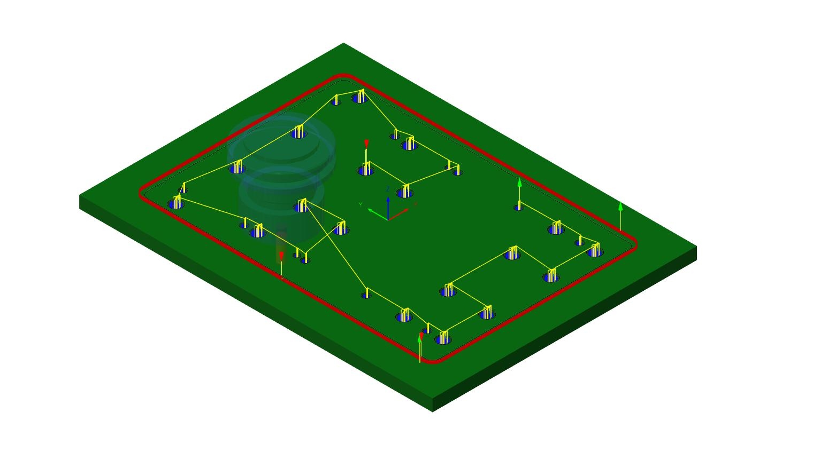
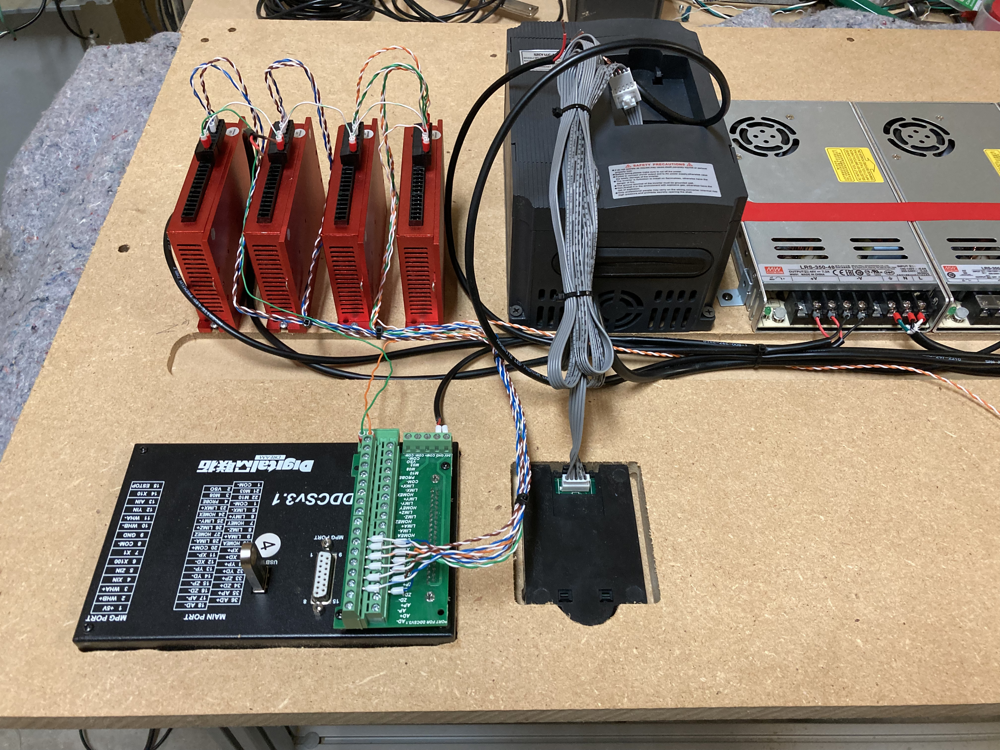
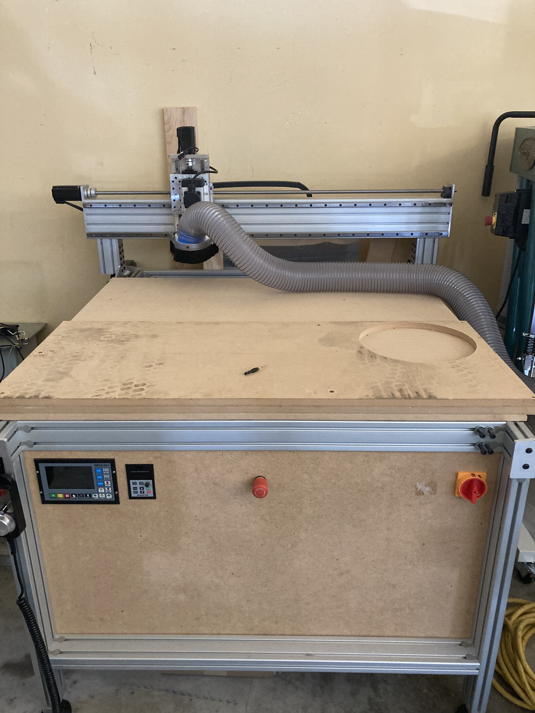
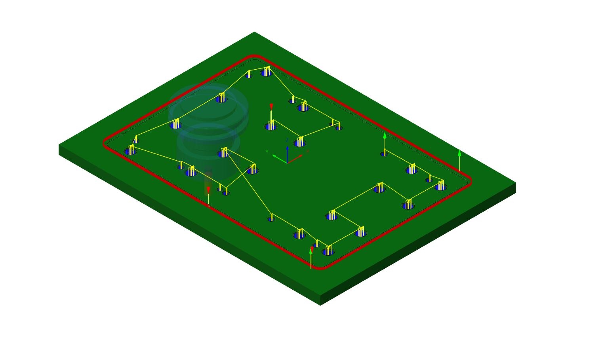
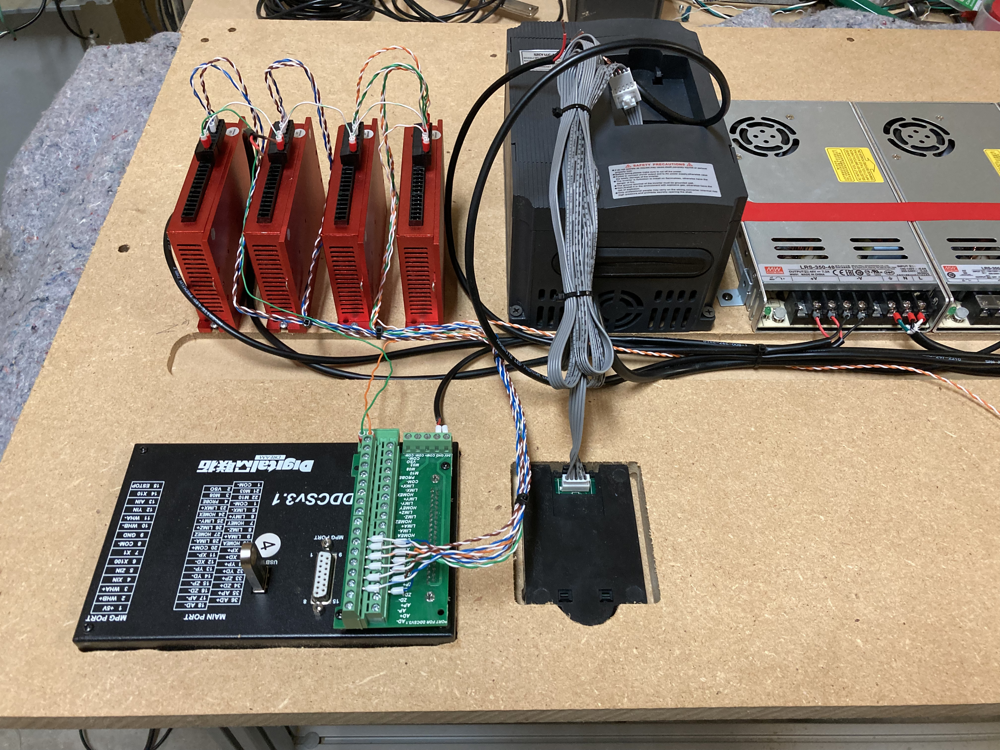
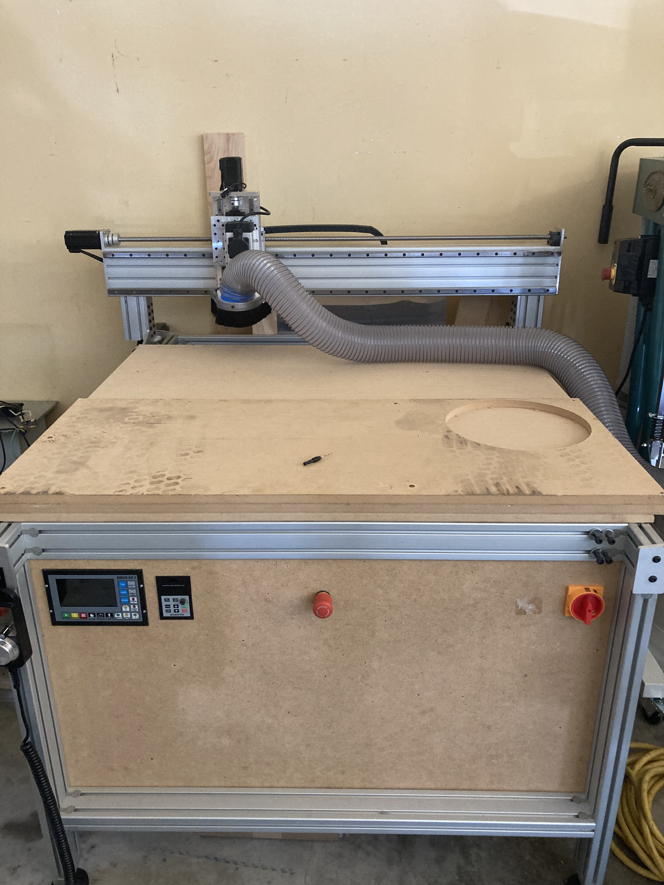

Custom Designed CNC Machine
From concept to a fully functional CNC machine: CAD design, fabrication, wiring, and G-code programming.
Overview
This project started as a simple idea: build my own CNC machine from scratch and learn every part of the process. I used Fusion 360 to design the full machine, including the frame, motion components, and mounting features for motors and electronics. After finalizing the design, I fabricated the parts myself and assembled the complete machine.
Once the mechanical build was complete, I wired the stepper motors, drivers, power supply, and control electronics. I configured the controller, set up homing and limits, and learned G-code to create and run toolpaths. The machine is now capable of cutting parts to a high degree of accuracy and repeatability.
My Role & Responsibilities
Key Skills & Tools
Photos
A few views of the machine from design to final assembly.
 





Click any image to open it in a new tab for a closer look.
3D Model Preview
Explore a simplified 3MF of the CNC frame. Rotate and zoom to inspect details.
If the viewer doesn't load, make sure your 3MF file is saved at models/cnc-machine.3mf.